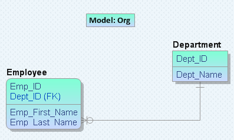

Back to Top
Back to Top
Select a model from your local computer or Mart to display in the left pane of the Resolve Differences dialog. The objects that you select in the left model are compared with the objects selected in the right model.
Follow these steps:
Lets you open a model from your local computer. Click Load and browse for the file.
Lets you open a model from Mart. If you have not connected to Mart already, the Connect to Mart dialog appears.
When you work with a read-only model in the Resolve Differences dialog, you cannot change it. Use this feature to perform a one-way compare.
For example, consider Org.erwin for the left model:
